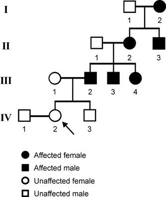

Family pedigree · patient = IV-2

Affected ♀
Affected ♂
Unaffected ♀
Unaffected ♂
Click someone → path climbs the family tree to the disease source (I-2). Toggle Short hop for the geometric shortcut.